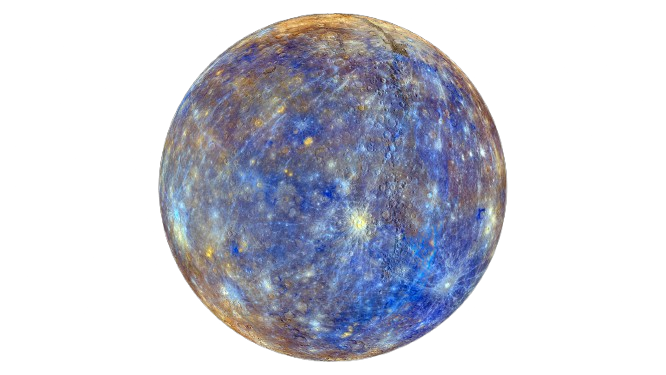
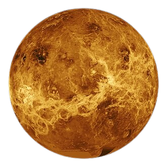
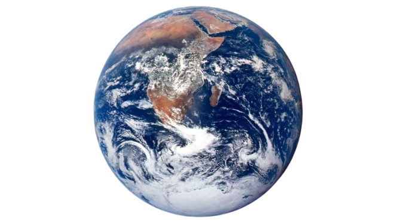
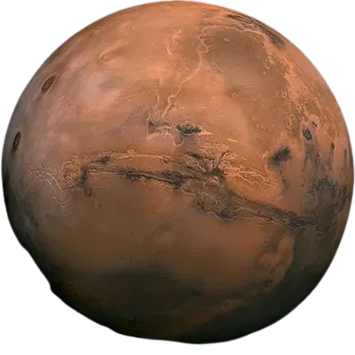
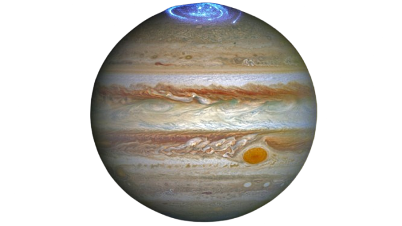
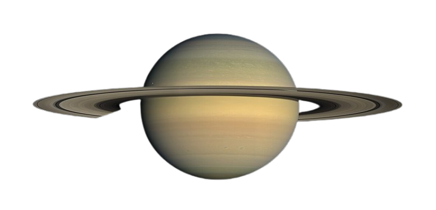
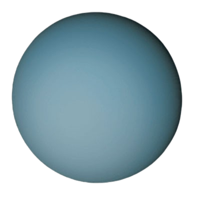
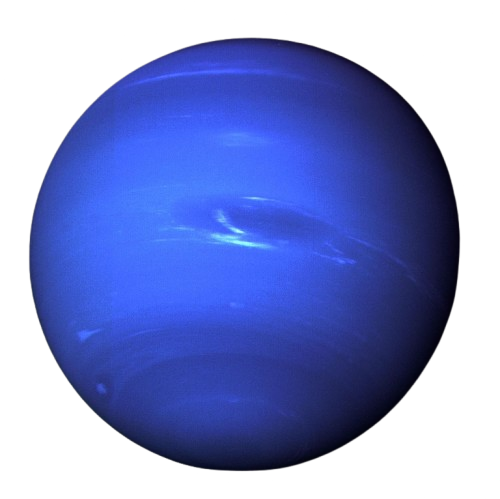

Our solar system contains eight planets, each with its own unique characteristics. From the scorching surface of Mercury to the icy reaches of Neptune, explore the worlds that orbit our Sun.

The smallest planet and closest to the Sun. Mercury has no atmosphere to retain heat, so temperatures swing from 430°C during the day to -180°C at night.
| Distance from Sun | Diameter | Day Length | Moons |
|---|---|---|---|
| 57.9 million km | 4,879 km | 59 Earth days | 0 |

Venus is the hottest planet, with surface temperatures reaching 465°C due to a thick atmosphere of carbon dioxide. It rotates backwards compared to most planets.
| Distance from Sun | Diameter | Day Length | Moons |
|---|---|---|---|
| 108.2 million km | 12,104 km | 243 Earth days | 0 |

Our home — the only known planet to harbor life. Earth's liquid water, oxygen-rich atmosphere, and moderate temperature make it uniquely suited for living organisms.
| Distance from Sun | Diameter | Day Length | Moons |
|---|---|---|---|
| 149.6 million km | 12,742 km | 24 hours | 1 |

The Red Planet is humanity's most explored neighbor. Mars has the tallest volcano in the solar system (Olympus Mons) and a canyon system longer than the United States.
| Distance from Sun | Diameter | Day Length | Moons |
|---|---|---|---|
| 227.9 million km | 6,779 km | 24.6 hours | 2 |

The largest planet in our solar system — a gas giant with a massive storm called the Great Red Spot that has lasted for over 350 years.
| Distance from Sun | Diameter | Day Length | Moons |
|---|---|---|---|
| 778.5 million km | 139,820 km | 9.9 hours | 95 |

Famous for its stunning ring system made of ice and rock. Saturn is so light it would float on water if there were an ocean large enough to hold it.
| Distance from Sun | Diameter | Day Length | Moons |
|---|---|---|---|
| 1.43 billion km | 116,460 km | 10.7 hours | 146 |

Uranus is an ice giant with a unique tilt that causes it to rotate on its side. It has a pale blue color due to methane in its atmosphere and experiences extreme seasons.
| Distance from Sun | Diameter | Day Length | Moons |
|---|---|---|---|
| 2.87 billion km | 50,724 km | 17.2 hours | 27 |

Neptune is the farthest planet from the Sun and is known for its deep blue color and extremely strong winds, the fastest in the solar system.
| Distance from Sun | Diameter | Day Length | Moons |
|---|---|---|---|
| 4.50 billion km | 49,244 km | 16.1 hours | 14 |